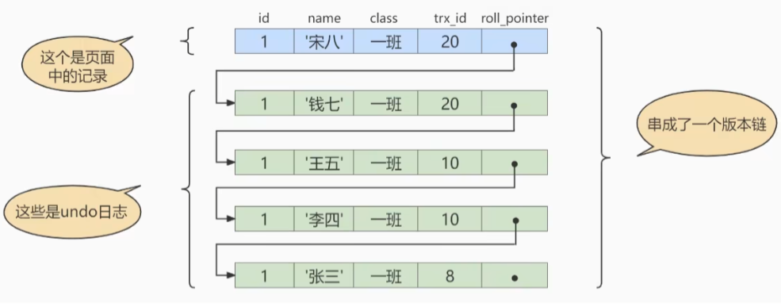

MySQL-MVCC
1. 什么是 MVCC
Multiversion Concurrency Control / 多版本并发控制，是通过数据行的多个版本管理来实现数据库的并发控制。这项技术使得在 InnoDB 的事务隔离级别下执行一致性读操作有了保证。就是为了查询一些正在被另一个事务更新的行，并且可以看到它们被更新之前的值，这样在查询的时候就不用等待另一个事务释放锁。
MVCC 的实现依赖于：隐藏字段、Undo Log、ReadView。
2. 快照读与当前读
MVCC 在 InnoDB 中的实现主要是为了提高数据库并发性能，用更好的方式去处理读写冲突，做到即使有读写冲突时也不用加锁，实现非阻塞并发读，这个读就是快照读，而非当前读。当前读实际上是一种加锁的操作，是悲观锁的实现，而 MVCC 本质上是采用乐观锁思想的一种方式。
2.1 快照读
快照读又叫一致性读，读取的是快照数据。不加锁的简单的 SELECT 都属于快照读，即不加锁的非阻塞读，如：
1 | select * from test where ... |
之所以出现快照读，是基于提高并发性能的考虑。快照读的实现是基于 MVCC，它在很多情况下避免了加锁操作，降低了开销。既然是基于多版本，那么快照读可能读到的并不是数据的最新版本，可能是之前的历史版本。快照读的前提是隔离级别不是串行级别，串行级别下的快照读会退化成当前读。
2.2 当前读
当前读读取的是记录的最新版本，读取时还要保证其它并发事务不能修改当前记录，会对读取的记录进行加锁。加锁的 SELECT 或者对数据进行增删改都属于当前读，如：
1 | select * from student lock in share mode # 共享锁 |
3. 隐藏字段与 Undo Log 版本链
对于使用 InnoDB 存储引擎的表来说，它的聚簇索引记录中都包含两个必要的隐藏列：
- trx_id：每次一个事务对某条聚簇索引记录进行改动时，都会把该事务的事务 id 赋值给 trx_id 隐藏列。
- roll_pointer：每次对某条聚簇索引记录进行改动时，都会把旧的版本写入到 undo 日志中，然后这个隐藏列就相当于一个指针，可以通过它来找到该记录修改前的信息。
例：现有表 student，其中有字段 (id, name, class)，表里只有一条数据 (1, ‘张三’, ‘一班’)，插入该条记录的事务 id 为 8。
假设之后两个事务 id 分别为 10 和 20 的事务对这条记录进行 UPDATE 操作，流程如下：
| 时间顺序 | 事务 10 | 事务 20 |
|---|---|---|
| 1 | BEGIN; | |
| 2 | BEGIN; | |
| 3 | update student set name = ‘李四’ where id = 1; | |
| 4 | update student set name = ‘王五’ where id = 1; | |
| 5 | COMMIT; | |
| 6 | update student set name = ‘钱七’ where id = 1; | |
| 7 | update student set name = ‘宋八’ where id = 1; | |
| 8 | COMMIT; |
每次对记录进行改动，都会记录一条 undo 日志，每条日志里有一个 roll_pointer 属性（insert 操作对应的 undo 日志没有该属性，因为该记录没有更早的版本），可以将这些 undo 日志连起来形成一个版本链：

4. ReadView
4.1 什么是 ReadView
在 MVCC 中，多个事务对同一个行记录进行更新会产生多个历史快照，这些快照保存在 Undo Log 里，如果一个事务想要查询这个行记录，需要读取哪一个版本的行记录呢？这时就要用到 ReadView 了，它解决了行的可见性问题。
ReadView 就是一个事务在使用 MVCC 机制进行快照读操作时产生的读视图。当事务启动后，会生成一个数据库系统当前的快照，InnoDB 为每一个事务构造了一个数组，用来记录并维护系统当前活跃事务（启动了但还没提交的事务）的 id。
4.2 设计思路
MVCC 主要是针对 Read Committed 和 Repeatable Read 两种隔离级别的事务。因为对于 Read Uncommitted 的事务，它可以读到未提交事务修改过的记录，所以直接读取记录的最新版本就可以了。对于 Serializable 的事务，它是排队串行化的，读的肯定是最新的记录了。
ReadView 解决的主要问题，就是对于使用 RC 和 RR 隔离级别的事务，判断版本链中的哪个版本是当前事务可见的，必须保证读到已提交的事务修改过的记录。
ReadView 中主要有 4 个比较重要的内容：
- creator_trx_id：创建这个 ReadView 的事务 id。只有在对表中的记录做改动，即增删改时，才会为事务分配事务 id，在一个只读事务中的事务 id 值默认为 0。
- trx_ids：在生成 ReadView 时当前系统中活跃（启动了但还没提交）的读写事务的事务 id 列表。
- up_limit_id：活跃的事务中最小的事务 id。
- low_limit_id：生成 ReadView 时，系统中应该分配给下一个事务的 id 值。即当前系统中最大的事务 id + 1。
例：现在系统中有四个活跃事务 trx2、trx3、trx5、trx8。
trx_ids 就是 trx2、trx3、trx5、trx8 的集合，up_limit_id 是 trx2，low_limit_id 是 trx8 + 1。
4.3 ReadView 的规则
有了 ReadView，在访问某条记录的时候，就可以按照以下步骤判断记录的某个版本是否可见，可以以上文对 student 表更改 name 字段的操作为例：
- 如果被访问版本的 trx_id 与 ReadView 中的 creator_trx_id 相同，说明当前事务在访问它自己修改过的记录，所以该版本可以被当前事务访问。
- 如果被访问版本的 trx_id 小于 ReadView 中的 up_limit_id，说明生成该版本的事务在当前事务生成 ReadView 前已经提交，所以该版本可以被当前事务访问。
- 如果被访问版本的 trx_id 大于或等于 ReadView 中的 low_limit_id，说明生成该版本的事务在当前事务生成 ReadView之后才开启，所以该版本不可以被当前事务访问。
- 如果被访问版本的 trx_id 在 ReadView 的 up_limit_id 和 low_limit_id 之间，那么需要判断 trx_id 是否在 trx_ids 列表中。如果在，说明创建 ReadView 时生成该版本的事务还是活跃的，该版本不可以被访问。如果不在，说明生成该版本的事务已经提交，该版本可以被访问。
4.4 MVCC 操作流程
当查询一条记录时，系统通过 MVCC 找到它的流程：
- 首先获取该事务的版本号，也就是事务 id。
- 获取 ReadView。
- 查询得到的数据，与 ReadView 中的事务版本号进行比较。
- 如果不符合 ReadView 规则，就沿着 Undo Log 版本链往下获取下一个版本的历史快照，按照上文的规则判断可见性。
- 最后返回符合规则的数据。
如果直到版本链的最后一个版本都是不可见的，说明该记录对该事务完全不可见，查询结果就不包含该记录。
当隔离级别为 Read Committed 时，一个事务中，每一次 Select 查询都会重新获取一次 ReadView。即使是同样的查询语句也会重新获取一次 ReadView，这时如果 ReadView 不同，就可能出现不可重复读或幻读的情况。
当隔离级别为 Repeatable Read 时，为了避免出现不可重复读的情况，一个事务只在第一次 Select 时获取一次 ReadView，后面所有的 Select 都会复用这个 ReadView。
5. 总结
通过 MVCC 我们可以解决：
- 读写之间阻塞的问题：通过 MVCC 让读写互相不阻塞，即读不阻塞写，写不阻塞读，提升事务并发处理能力。
- 降低了死锁的概率：MVCC 采用乐观锁的方式，读取数据时不需要加锁，对于写操作，也只锁定必要的行。
- 快照读的问题：当我们查询数据库在某个时间点的快照时，只能看到这个时间点之前事务提交的更新结果，而不能看到这个时间点之后事务提交的更新结果。